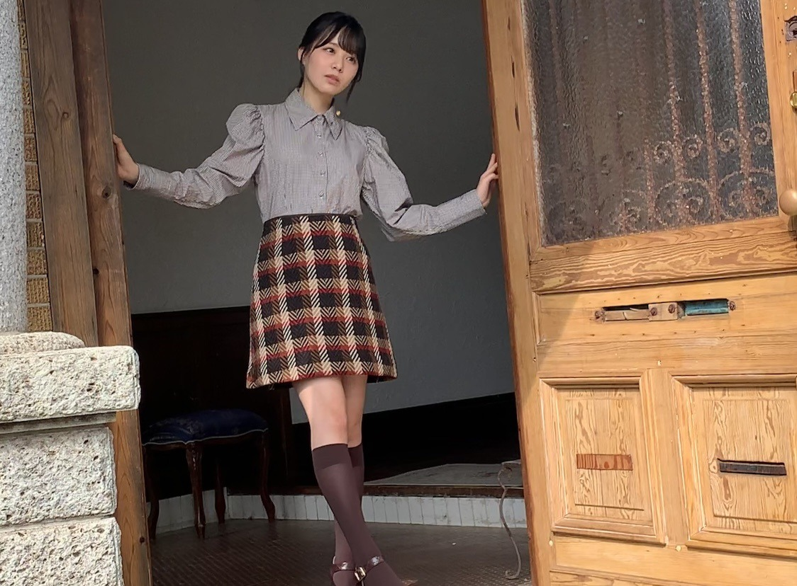

2020/1124Tue思考能力。佐藤璃果
こんにちは~
乃木坂46 (新)4期生 岩手県出身
佐藤璃果です。

秋色のお洋服がとても可愛いです。


ピンクのモコモコのお洋服を着ております。
11月21日発売
アップトゥボーイVol.297さんのオフショットです。
お家が素敵で、家具も素敵で、
こんなお家に住みたい！と思いました。
岩手県出身の方が2人もいらっしゃって
とても嬉しかったです︎︎☺︎
色んな岩手トークを楽しみました。

これは堀未央奈さんの写真集に出てくる
所に似ている〜！と盛り上がっていたら
マネージャーさんが撮るよ！！と言ってくださた写真です。
あのポストカードにもなっているところです！
わかりますか？
でも後で見返したら、もっとゲート？の部分が白かったですね(--;)
そして、少し前の堀さんの755で
私の話題が出ていて、それに堀さんも反応してくださっていて嬉しかったです。
書いて下さった方、それに反応して下さった堀さんありがとうございます( ¨̮ )
❁
坂道研修生ツアーを見た日から、
私たちがグループに配属された際には
全員、載せたいと思っていたんだよ
というお言葉を頂いて、
それがとてもとても嬉しく、感動しました。
発売中です。
よろしくお願いします。
~~~質問~~~
○ ストーブとエアコンと炬燵どれ派ですか
夢は暖炉で、
実家ではストーブと炬燵
現在エアコンです。
○冬の防寒は最大でどのくらいまでする？
ヒートテックなど三、四枚着込みます！
○今年中3の受験生で推薦受けるんだけど面接とか苦手で...だから応援してほしいです( .. )
目の前の人をかぼちゃと思いましょ！笑
あと、答えを丸暗記しすぎると予想してなかった質問が来ると焦ってしまうので、
普通の会話、ぐらいの気持ちでいるのもいいかも知れません...
私は焦るタイプでした(--;)
○ イルミネーションといえば、神戸のルミナリエは見に行ったことありますか？
わからないです、、
素敵なんですか？？調べてみますっ
○ 水族館で好きな生き物はなんですか？
イルカ、アシカさん
○ 璃果ちゃんはゼッケン後ろ前反対に着たことありますか？？
沢山あります！
ちなみに洋服は裏表逆もあります！
○ 自販機でつい買ってしまうものってありますか？
お水です！
○ 岩手県では「おばんです」や「したっけ」って言いますか？
もしくはだれがか使ってるのを聞いたことはありますか？
おばんですは、よくテレビで流れていたし、おばあちゃんも使っていた気がします
したっけはよく使いますよ~
したっけさー、なんとかでさーって
○ 今年新しく買ったアウターとかありますか？
迷って何も買えていません...
○ 好きなクリスマスソング教えてください☆
クリスマスソング！
○ 岩手県民はよくお餅を食べるとのこと。
璃果ちゃんもよく食べてた？
すんごく食べていました。
11月20日、掛橋沙耶香ちゃん
❁お誕生日おめでとう❁
不思議な子だなぁと思うことが多いのですが、色々絡んでくれることがとても嬉しいです！声も可愛くて、ギターも上手で、
物怖じせずに堂々としている
さやかちゃん尊敬︎︎︎︎︎☺︎
さやか！！
すごい一生懸命褒めようとしてくれたことが印象深いです！！
天真爛漫さ素敵です。
これからも絡みに来てください
どんとこいやっ
~~~~~~~~~~~~~~~~~~~
明日はるなぴです。
一緒に乗り越えよう2。
~~~~~~~~~~~~~~~~~~
皆さんにとって
素敵な1日になりますように。

扉も素敵でした。
またね。
好きなスイーツはなんですか？
オフショット祭りになりました。
もっと良いものを作っていけるように日々
考え行動していきたいです。
いつもありがとうございます。
#43 りか

PROFILE
新4期生リレー
202104
| SUN | MON | TUE | WED | THU | FRI | SAT |
|---|---|---|---|---|---|---|
| 1 | 2 | 3 | ||||
| 4 | 5 | 6 | 7 | 8 | 9 | 10 |
| 11 | 12 | 13 | 14 | 15 | 16 | 17 |
| 18 | 19 | 20 | 21 | 22 | 23 | 24 |
| 25 | 26 | 27 | 28 | 29 | 30 | |

コメント(268)
1日誰かになれるなら誰になりたい？
りかちゃんの先輩の誕生日を祝えるなんて素敵な大人だね！
びっくりしたよ‼️大人になったんだと思うと泣けてきちゃう！
りかちゃんも素敵なアイドルになれるよきっと！
〜質問〜
①公式ブログはどうやって書いてますか？
②好きな本は何ですか？
またね
ブログ更新ありがとうございます
のぎおび4期生ウィーク楽しみにしてます^_^
ー質問ー
・呼ばれたいあだ名ってあるかな？
・気晴らしではよく何をする？
・写真集を発売するならどこで撮影したい？
・質問というかお願い！メガネをかけた姿も見てみたいな！
ありがとう！次回も楽しみにしているよ。
アップトゥーボーイさん読みました！
どの璃果ちゃんも可愛すぎました(＞＜)
4期生ライブまで後少し！
すごく楽しみです！！！！
質問です☺︎
◎ 最近買ったお洋服とかアクセサリーはありますか??
◎ 璃果ちゃんはずっとロングなんですか??それともショートの時代ありましたか??
◎ 小さい頃からこれがずっと好き！っていうものありますか??
今日も世界一璃果ちゃんが可愛いです♡♡
まなより
璃果ちゃんブログ更新ありがとう〜！
オフショット祭りになってるって謝ってくれてるけど、全然謝らなくていいよ〜！って感じやね笑
むしろ自分の家にあるアップトゥボーイさんと違う写真が何枚も見れて嬉しいかな〜
好きなスイーツはチーズケーキかなー、でもチョコレートケーキも捨てがたいんよなぁ。
甘いものが好きな身としてはひとつに絞るのは無理そうやー。。
そういえば12月には祝日がないから、もう今年の祝日が全部終わったってことやけど、璃果ちゃんは特に好きな祝日とかありますか？？
僕はやっぱりゴールデンウィーク辺りの祝日が好きかな〜連休が長くなるから笑
あといま乃木恋でサインイベント頑張ってるんやけど、もしこの名前を覚えてくれてたら嬉しいなって思います。
んじゃもう今年も5週間ぐらいやけど、こっからまた頑張っていこー
遅くなったけど 今日 買ったよ 笑 。。
りかわ いいね
のぎおびは いつかな？ 楽しみに
4期生ライブもうすぐだね！すごく楽しみです！
璃果ちゃんが加入してから初めて主役としてのライブだね！
今からすごく待ち遠しいです！楽しみにしてます！
アップトゥボーイ買ったよー！
個人的には自転車引いてる璃果ちゃんがめちゃくちゃ好きです！すごい璃果ちゃんにぴったりな衣装で可愛さ激増しでした！
最後に質問コーナーお願いします！
Qクリスマスのイルミネーションとか好きですか？
Qクリスマスの予定は決まってますか？
Q璃果ちゃんにサンタさんは来ますか？
良かったらお答えお願いします！
またコメントするね！またねー
PS.裸足でななよだ(きょうすけ)
秋色のお洋服かわいい！
たくさん質問返しありがとう
好きなスイーツはパフェです！(パフェなら全般好き！)
次まで待ってるね
最初のお写真、普段とはまたちょっと違った感じでいいね！
チェックのスカートかわいい
ちょっと西洋チックな家だったのかな、雰囲気的に。
僕来年から設計士なるのでいつでもお家考えますよ笑
未央奈の写真集は1stしかまだ変えてないから分からないな。
もしかして1stの写真？だったらやばいね、もう忘れてきちゃってる笑
ヒートテック三、四枚は暑くない？笑
東北ってそんなに寒いの？
行ったことないんよね。1回行ってみたいな。
好きなスイーツ？んーなんだろ、いっぱいあるな。チーズケーキも好きだし、普通のショートケーキも好きだし、ガトーショコラも好きだし、コンビニのシュークリームも好きだし、いっぱいあり過ぎる笑
甘いものめっちゃ好きなんよ笑
オフショットたくさんありがと！
全部可愛かったよ。
璃果ちゃんにとっても素敵な1日になりますように。
またブログ更新楽しみにしてます！
(=ﾟωﾟ)ﾉﾎﾅ､ﾏﾀ!!
4期生ライブのチケットも買いました！
セルフクリスマスプレゼントやなと思っていますｗ
璃果さんは、和洋どちらもですが、
かっちりとして、重厚なものが
似合うんじゃないかと思います。
○質問○
岩手というと座敷わらしのいるという旅館が有名ですが、
ご存じですか？
うちの方は シロクマかな 笑 。。 ( ^ (工) ^ )b
私と同じ東北出身です。
東北魂見せようぜ！
好きなスイーツはシュークリームです！
サクサクトロトロが大好きなんです( ⸝⸝⸝¯ ¯⸝⸝⸝ )♡
◎ 璃果ちゃんがライブとかで披露してみたい曲はなんですか??
◎ 璃果ちゃんがアイドルしてるな~とおもう瞬間はどんな時ですか??
◎ 璃果ちゃんが今ハマってる食べ物とかありますか??
真奈より
「UTB」買ったよ。冬の岩手は楽しいですね、いつか冬の岩手も見てみたい。
Q：冬に一番見たい場所と、そこで何をするか？
4期生ライブを楽しみにしています。これからも頑張ってね！！
モンブランの乗った プリン.. (くりかな 笑 )
ありがとうございました。
コメント、失礼します！
ブログ更新、ありがとう！
アップトゥボーイさん、見ましたよ。
めちゃくちゃ可愛かったです。
特に白い花を持ってる写真とか、可愛すぎました。
インタビューも読んだけど、4期生に馴染めてたり乃木坂の空気感にも触れられてるみたいで良かった。
オフショットも可愛いです。
確かに素敵なお家だね。
質問の返事もありがとう！
やっぱり冬の岩手は寒いんだね。
正直東京の寒さはぬるいでしょ笑笑
そして、イルミネーションは東京にも素敵な場所が色々あるから、落ち着いたら行ってみて欲しいです。
横浜にも来て欲しいな笑笑
好きなスイーツ…
甘いものは好きなので、悩みますね…
あんこは家族揃って大好きです。
ケーキだとモンブランが1番かなー。
あとはバニラアイスとかですかね。
それでは、この辺で。
おやすりかちゃんー
オフショットたくさんありがとう
好きなスイーツは亀の子せんべいと田村の梅ですかねぇo(^_^)o
ブログ更新ありがとう\(ᯅ̈ )/
アップトゥボーイも見たよ〜〜
かわいかった( ՞⌓°⎞
りかちゃんに質問です
学校に行きたくない日はどうしますか〜
お気に入りのお洋服はなんですか〜
りかちゃんは早く起きられますか〜
りかちゃんの可愛さにいつも失神しています(*˘ ³˘)
りかちゃん大好き（ღ´罒`ღ）♡ﾆﾋ
ことが〜♪
好きだ〜♪
YOSHIKI
オフショット祭り最高に可愛いし、ありがたいです…！！！
アップトゥボーイまじまじと何回も読み返すくらいシチュエーションから何から好きで、素敵なグラビアだなと感じました！りかちゃんほんとに可愛いよね…うん。(笑)
またソログラビア掲載されること楽しみに待ってるね！
俺の好きなスイーツは、モンブランです〜！
秋産まれってこともあるのか、栗がすごく好きで栗関連のスイーツとかめちゃくちゃ好きなんです…(*´﹃｀*)
栗じゃないけど、スイートポテトとかも好きです！
質問
・踊ってみて大変だった曲とかありますか？
・家にこたつはありましたか〜？
・りかちゃんが今アイドルなんだなぁって感じる瞬間はありますか？
・りかちゃんはアニメとか映画とか何か好きなキャラクターはいますか？
・要望なんですけど、リカロットの時より高めのツインテール見てみたいです！！！
5日後をまた楽しみに待ってるね！
メリアより。
今日もめちゃくちゃ可愛いです。
四期生ライブもうすぐだね。めちゃくちゃ楽しみです。後、パジャマトークもめちゃくちゃ楽しみです。どんなパジャマを着るのかな？超楽しみ
璃果ちゃんに質問です。
○四期生ライブで楽しみなことはなんですか？
○このシングルでの意気込みはなんですか？
○璃果ちゃんは男の子の好きな髪型とかありますか？
いつも更新ほんとありがとう。今から5日後の更新がまたちのしみです
岩手の人が居るけど・・・・会話に成らん(笑)ヽ(￣▽￣)ノ教えてくれよ (*´∀｀)
アップトゥボーイ買いました！あまりの可愛さになかなかページをめくれませんでした笑
~質問~
〇郵便物は余裕もって出しますか？？
〇コンビニで絶対買っちゃうものとかありますか？？
〇ひなこいはやりますか？？
この前乃木フェスでananコラボのガチャを璃果ちゃん欲しさに璃果ちゃんの誕生日まで貯めとこうと思ってた分を使って10連引きました〜。出ないだろうなぁって思ってたら出てくれてめちゃめちゃ嬉しかったです！！
好きなスイーツは、クレームブリュレです！見つけたら絶対買っちゃいます笑
次の更新も楽しみにしています！応援してます！！
りかちゃん今日も可愛いです。
りかちゃん今日も１日お疲れ様です。
今日はお仕事でした。
今日は凄く忙しくて大変でした。
明日はお仕事です。
今日は三連勤の初日が終わりました。
後二日頑張ります。
最近は寒くなって来てるので体調を崩さないように気を付けてください。
自分も体調を崩さないように気を付けます。
これからもお仕事頑張って下さい。
自分もお仕事頑張ります。
これからのブログを楽しみにしてます。
オフショットいっぱいありがとう！！
りかちゃんの楽しそうな表情。
撮影重ねるたびに、どんどん色んな表情できてるような気がする！！
りかちゃんの努力が感じられます。
また雑誌楽しみにしてるね。
新シングルのタイトル決定！
僕は僕を好きになる 杉山さん作曲ってこともあるし、めっちゃ楽しみ！！
明日のベストアーティストで初披露やね。
りかちゃんの見よー！
りかちゃんはどんな曲に参加してるのか、楽しみです！
楽しみなことだらけや笑
今日からのぎおびは4期生スペシャルウィークやね。
りかちゃんはいつ出るかなぁ。
4期生ライブまでもう少し。
レッスンも頑張ってね！
ではでは体調には気をつけて。
次のブログも待ってます。
いつもありがとう。
璃果ちゃん♪
ウォウウォウウォ〜♪
好きなスイーツはプリンです。
最近なんかいいことないな〜
って感じだけど、そんな時は佐藤さんならどうする！？
あんまよくないことも続いてる感じなんよね。
人生楽しく生きようーーーー！！！！
自己完結！！！！
んじゃ、またね！！！！
UTBみました！！貴重なオフショットありがとう！！
秋っぽい中に璃果ちゃんのフレッシュさを感じるお召し物にドキドキしました。可愛かった〜
インタビューのふわふわ感がたまらなかったし、岩手愛がすごく伝わってくる内容だったなぁ笑
なんか言葉にしたら纏まらなそうだけど、この感想とかを面と向かって伝えたいなぁ
シングルも決まったし、ミーグリできるのかな？楽しみに待ってるね！！
またコロナの感染者が増え始めてるから、璃果ちゃんも今まで以上に注意してもらう一方で、お身体の方も労ってもらって、無理せず周りの人たちに頼りながらお仕事頑張ってね。
早く逢いたいなぁ
いつもありがとうね！
たーくん
コメントする